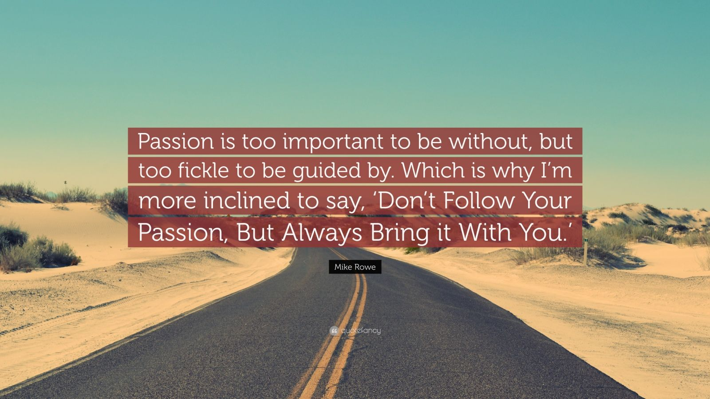

KNOXJIMBO
James "Jimbo" Clark
Minneapolis
Passion?

Top 5 Reasons I Have More Passion for Web Development than Electrical Work:
- No more raging on I-35 every day
- Significantly lower risk of electrocution, blowing my back out, or getting squished by a Bobcat
- The opportunity to collaborate with people smarter than me who are into stuff other than ice hockey and pole barns
- The potential to exercise critical thinking skills while solving problems, perhaps even creating something new rather than always doing things "by the book"
- As I get older, it's more & more difficult after a hard day of physical labor to enjoy my hobbies, which include: